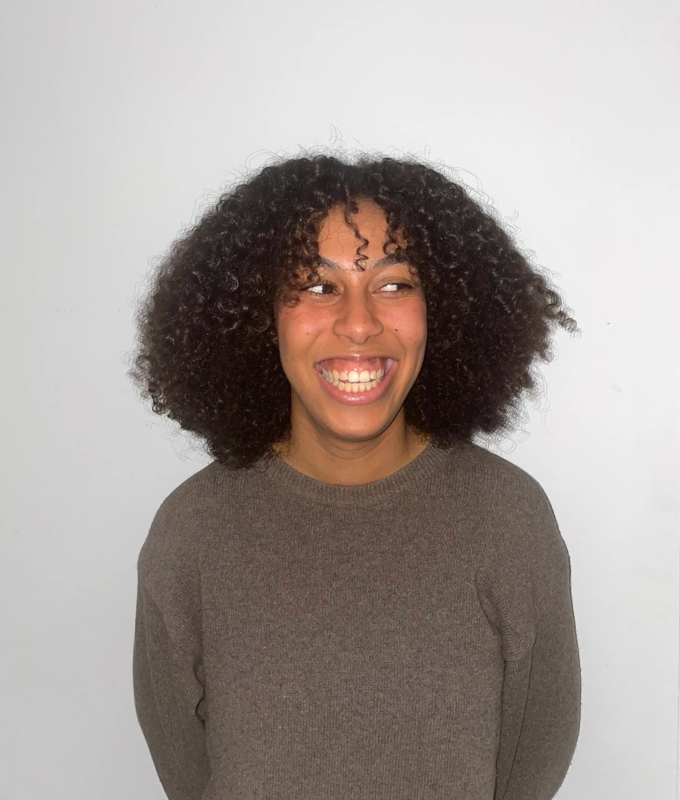
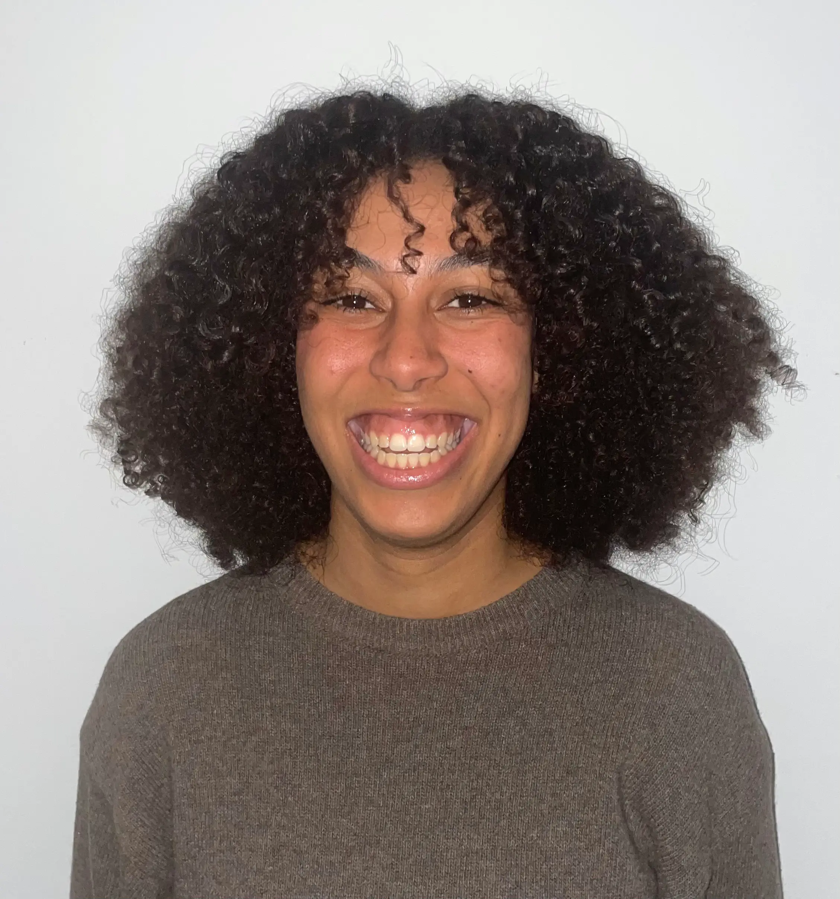

En lang vej til Multimediedesign
Mit navn er Josefine, jeg er 24 år og læser Multimediedesign på KEA. Men inden jeg endte på KEA, var jeg ude og afprøve lidt forskellige ting.
Jeg har læst et semester på Informationsvidenskab, hvor jeg fandt ud af, at kodning, UX og alt det der ligger bag en god hjemmeside var lige mig. Dog var den store læsemængde på universitetet ikke lige så meget mig og jeg søgte derfor ind
på Beklædningshåndværker uddannelsen i stedet for. Her genopdagede jeg min store interesse for design og kreativ udfoldelse, på en uddannelse der var meget mere hands on og meget mere mig. Jeg sad som tøjdesignelev ved JJXX hos Bestseller
og indgik på lige fod med de andre i designteamet. Her fik jeg en masse god erfaring om design, adobe programmerne og hvordan man samarbejder i en så stor virksomhed, både internt og internationalt. Dog var tøjdesign ikke min passion og jeg
endte derfor med at stoppe uddannelsen. Senere tog jeg på Vallekilde højskole, hvor jeg opdagede en stor interesse for at skabe, filme og redigere video og andet indhold.
Alle disse erfaringer fra tidligere uddannelser har gjort, at jeg er endt lige her på Multimediedesign, hvor jeg får muligheden for at kombinere både kreativitet, design, kodning og indholdsproduktion.


Mine kompetencer
Tidligere erfaringer
llustrator
InDesign og Photoshop
Filme, interviewe og videoredigere (Final cut pro)
Html, css og javascript
Erfaringer efter 1. semester
Figma
After Effects og Premier Pro
Brugerundersøgelser
Html, css og javascript